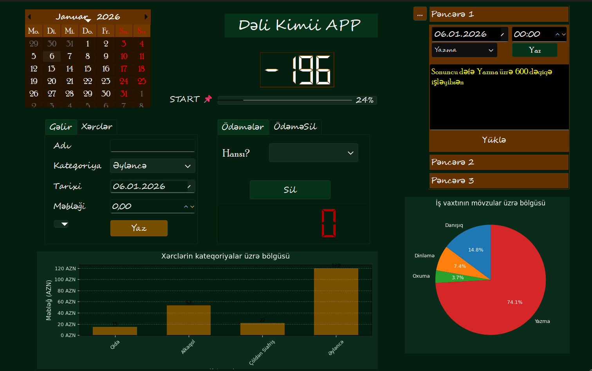
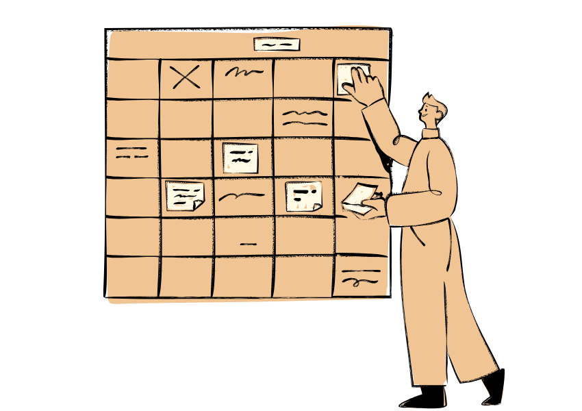
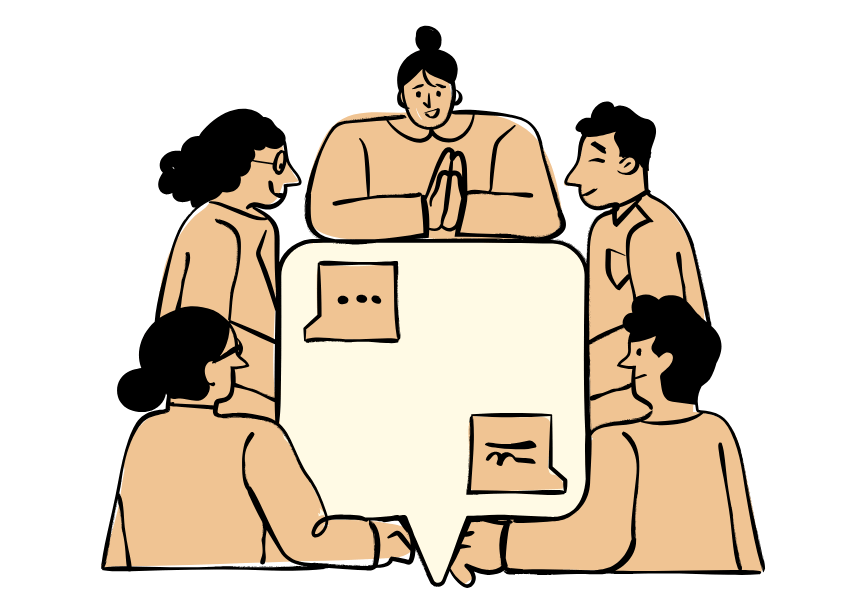
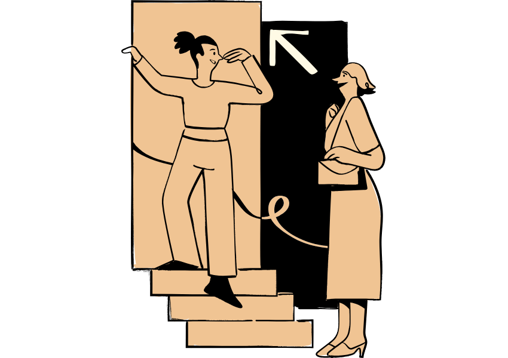
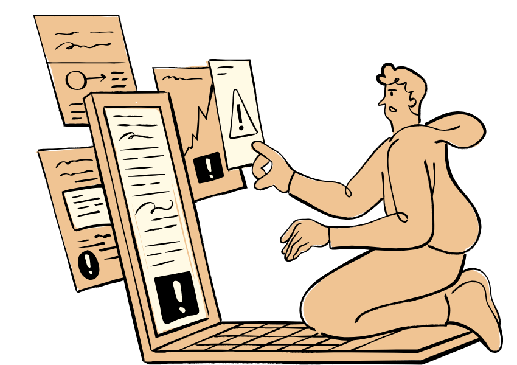
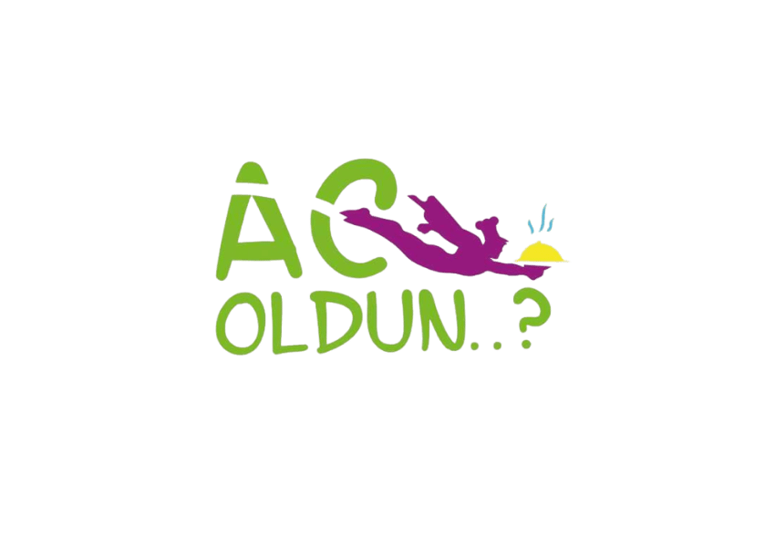
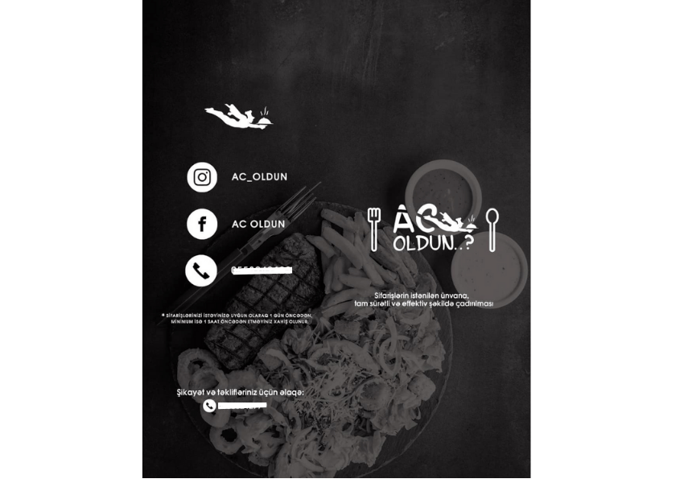

Dəli-Kimi-APP
Personal Finance and Productivity Management App (Desktop: Windows)
Dəli Kimii APP is a desktop program created for personal use, later improved and shared as open source. Its goal is simple: to see your financial situation and activity progress in one place, in an easy and visual way, for a set period of time.
The app works fully offline and all data is saved locally.
Dəli Kimii APP helps you manage your personal finances by allowing you to record income and expenses by categories, calculate your balance in real time, and keep track of payment history with reminders. It also automatically manages categories for easier organization. The app provides visual analysis with graphs and charts using Matplotlib, lets you track your progress over a chosen time period, and supports saving and loading data from CSV files as well as exporting reports to Word. The interface is fully in Azerbaijani, built with PySide6 (Qt6), features a dark theme with green tones, and includes three windows for activity control.

You can download the program for Windows from this Release
If you want to view or run the source code, you can find it from
this Repo
European Solidarity Corps Volunteering in MONOPATIA ALLILEGGIIS (Solidarity Tracks)
Career Coaching & High Profiling® Program – INQUA Institute
This is a structured career coaching program provided by the INQUA Institute in Germany. The program is based on an individual and systemic approach and focuses on career positioning, long-term goal setting, and strategic planning. It also includes practical and interesting elements such as personal analysis and the exploration of one’s professional role and behavior.
I completed the program in a hybrid format over a period of 8 weeks. The first sessions were mainly focused on personal analysis, and this part was especially valuable for me. We looked at strengths and weaknesses from an analytical perspective, not an emotional one. Based on these insights, we worked on building a personal and realistic strategic approach.

In the later sessions, the focus shifted more toward decision-making based on environment and situations. We worked on identifying internal and external factors that shape our professional and personal positions. Special attention was given to understanding these influences clearly and not ignoring them when making decisions.
Overall, the program was rich and well balanced. The topics were not only about career or job searching. They were more focused on self-understanding, attitude toward work and responsibility, motivation, and behavior patterns. Through this process, I learned analysis and thinking methods that are not limited only to the work environment.
You can click the link below to view the certificate.
Communication Power Program — Julia Rupprecht
This two-day Communication Power program was organized by the Career Center of Weihenstephan-Triesdorf University, and the training was conducted by Julia Rupprecht, a communication and rhetoric coach in Germany. Julia has academic education in "Speech Communication and Rhetoric" and also has practical experience in the field of speech and language, and her main focus is directed towards helping people express their thoughts in a clearer, more effective and convincing way.

The goal here is not just to choose words correctly, but to understand how a person is perceived through their voice, body language and behavior style. During the training, practical answers were sought to questions like why sometimes even correct ideas don't reach the other side in the communication process, why some people automatically attract attention when speaking, while others remain invisible even though they give the same message.
During the program, the basic principles of rhetoric, building arguments and situation-appropriate communication strategies were worked on through real dialogues. Through various workshops and practical tasks, participants learned how manipulation techniques work, how to recognize such approaches and how to react against them. The especially emphasized point was that during communication, not only what to say, but when and in what form to say it is more effective.
The strongest side of this program is that theoretical knowledge was analyzed not in an abstract form, but on real situations that we can face in daily life, academic and professional environments. Thanks to role plays, mutual feedback and observations, the psychological side of the communication process started to become clearer. At the end of the two days, significant progress was felt not only on speaking techniques, but also on self-confidence, observation ability and conscious reaction skills.
Julia's teaching style was open, sincere and at the same time structured. No mandatory "rhetoric rules" were memorized; on the contrary, the aim was to make each participant's own natural communication style stronger and more effective. In this respect, the Communication Power program remained in memory as a practical experience that brings communication skills to a more conscious and effective level in a short time.
Winter Leadership School – (2018)
This one-week leadership program was organized by the Azerbaijan Students Youth Organizations’ Union in cooperation with the Ministry of Youth and Sports of Azerbaijan and brought together students from different regions and educational backgrounds. The program focused on leadership, teamwork, communication, and social engagement through a combination of trainings, workshops, and group-based activities.
Throughout the program, the emphasis was not placed on theoretical leadership models, but on practical interaction, collaboration, and responsibility within a group. Working in teams, exchanging perspectives, and dealing with real-life tasks made the learning process dynamic and experience-based rather than abstract.
One of the most valuable aspects of this program was the opportunity to observe different communication and leadership styles in a diverse group setting. It helped me better understand how group dynamics work, how roles naturally form in teams and how personal attitude and behavior influence collective outcomes. Overall, the Winter Leadership School remained a formative educational and social experience that contributed to my personal development and my understanding of collaborative work.

You can click the link below to view
the certificate.
Savings Game – German Savings Banks Foundation
This program was organized by the German Savings Banks Foundation for International Cooperation and focused on long-term financial thinking and responsible decision-making. The “Savings Game” was designed as an interactive learning format that combined financial topics with simulations, group discussions, and practical tasks.

During the program, the main focus was on long-term financial planning, understanding risks, and evaluating financial decisions over time. Instead of only learning theory, participants worked on realistic scenarios that showed how everyday financial choices can influence future stability and sustainability. Topics such as saving, investment thinking, and financial responsibility were discussed in a clear and practical way.
A strong part of this program was its interactive structure. Through teamwork and active participation, it became easier to understand how financial decisions are connected to behavior, planning and personal responsibility. Overall, the Savings Game helped me develop a more conscious and structured approach to long-term financial decisions and increased my awareness of how financial thinking affects both personal and professional life.
You can click the link below to view
the certificate.
Be!Savad / Online Education Platform
At Be!Savad, we imagine a future where learning is truly open and inclusive — not limited by where you live, how much money you have, how much time you can dedicate, or by outdated and rigid education systems. We believe that everyone, regardless of their background or circumstances, deserves access to high-quality learning opportunities that fit their individual needs.
Our goal is to build an easy-to-use, engaging, and motivating learning platform that combines both business and social projects, creating a space where knowledge meets action. Be!Savad is not just a platform; it is a fun and active learning community that connects students, teachers, and parents, fostering collaboration, curiosity, and growth.
Through live classes, interactive tools, and progress tracking, learning becomes more than just a task, it becomes an exciting, continuous journey. Students can explore their interests at their own pace, parents can follow progress with clarity, and teachers can deliver lessons that are dynamic and impactful.
In addition, Be!Savad maintains an active presence on Instagram, where we regularly share humorous, animated educational content, making learning fun, relatable, and visually engaging. This approach helps reinforce concepts outside of live classes and keeps learners of all ages connected to the platform. Our mission is to make quality education a simple, everyday part of life for people of all ages, tailored to each person’s unique needs. Our vision is a world where learning knows no boundaries, inspires action, and empowers every individual to reach their fullest potential.
Be!Savad stands for accessibility, engagement, and meaningful learning, shaping the future where education is personal, practical, and universally inspiring.
Ac Oldun? / Food-Delivery
Ac Oldun was my first serious and real commercial project. The idea did not start from technology, but from a simple daily problem: office food fills your stomach, but it does not feel like home. Many offices had catering services, but they were missing the taste and warmth of home-cooked food.

I built the idea around this problem not just delivering food to offices, but delivering the feeling of home. In the first stage, everything was very simple. The food was cooked at home, the number of clients was small, and most processes were done manually. This stage helped me understand one important thing: the problem was real, and people truly cared about it.

With this concept, I joined the IdeyaQazandı 2018 national entrepreneurship competition and reached the final stage. I presented the idea on stage, answered many questions, and explained it as a real business. Reaching the final was a big motivation for me, but honestly, I did not receive investment. My stage presentation from IdeyaQazandı can be seen here:www.facebook.com/watch
At first, this moment felt like a failure, but it became a strong learning experience. I understood that having a good idea is not enough. Execution, cost planning and clear explanation of risks are just as important.
After some time, I found an alternative investor and relaunched Ac Oldun with a more realistic approach. At this stage, the project was no longer romantic. It was about operations, logistics, customer expectations, costs, and daily decisions. The project became fully functional and achieved successful results in practice. For me, Ac Oldun was not just a startup. It was my first real school as a founder. I learned about product– market fit, responsibility and the real results of wrong decisions. This experience strongly shaped how I think and work in later projects.